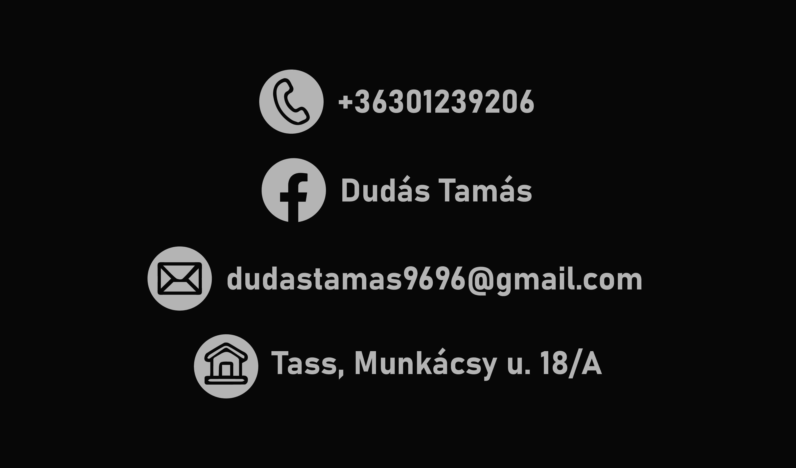

A veboldalamnak egyszerű struktúrát választottam és hozzá egy felső navigációt, ami folyamatosan látható. Emellett az elérhetőségeimet a láblécen adtam meg, ami elérhető görgetéssel szintén az összes oldalon.
|
 |
Az oldalakat külön-külön alakítgattam ezután, amikhez 1 css kódot használtam, ami többnyire gyorsabbá és egységesebbé tette a munkámat (néha azért okozott problémát). A legnehezebb a képek beillesztése és az oldal responsiv-vá tétele volt.
A képeket nem tudtam valamiért sem flex box, sem pedig grid rendszer segítségével megoldani, mert valami sosem működött jól. Ezután kezdtem el táblázatba rendezni a képeket, de még így is voltak problémák, mivel ha egy táblázatot használtam az összes képnek, akkor az egyáltalán nem úgy működött, ahogyan azt szerettem volna. Végül több táblázatot is használtam (valószínűleg 1-el is meg lehetett volna oldani, de azt még mindig nem tudom, hogy hogyan).
 |
Az oldal responsiv-vá tétele azért volt nehéz számomra, mert nem tudtam pontosan, hogy mennyire kell azzá tenni, elég az is, ha működik és látszik minden, vagy szépen elrendezettnek kell lennie mindennek, esetleg egészen más elrendezést kell használni, mint az eredeti gépi elrendezésnél. Nagyon sok netes tartalom van arról, hogy hogyan érdemes ezt csinálni, éppen ezért nagyon könnyű elveszni. Én végül nem bonyolítottam túl a dolgot (nem állítottam be más elrendezést, lenyitható menüsort...), az volt a célom, hogy működőképes maradjon az oldal attól függetlenül, hogy milyen eszközről van megnyitva.
A feladat megoldásához a Visual Studio Code nevű kódszerkesztőt és az Illustratort is használtam a képek, szimbólumok létrehozására, szerkesztésére. Ezeket a szoftvereket bátran tudom ajánlani bárkinek, jól lehetett velük dolgozni és nem okozott túl sok nehézséget a kezelésük sem.
 |
 |
A projekt összességében komoly kihívás volt, hiszen korábban semmilyen nyelven sem tudtam programozni/kódolni és még most sem érzem, hogy jól mennének ezek a dolgok. Ennek ellenére büszke vagyok az eredményre (még ha messze nem is tökéletes) mert tudom, hogy sokat dolgoztam vele és az alapvető elképzeléseimet sikerült megvalósítani. Az pedig mostmár tisztább számomra, hogy egy weboldalfejlesztő/webdesigner mivel is foglalkozik, még ha magamat jelenleg nem is tudnám elképzelni ilyen területen.
A felhasznált segédanyagok:
wh3 schools: https://www.w3schools.com/html/html_intro.asp
HTML and CSS Tutorial for 2021 - COMPLETE Crash Course: https://www.youtube.com/watch?v=D-h8L5hgW-w
CodePen: https://codepen.io/